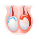

Epididymitis
Rx:
1. Vial Ceftriaxone 250mg N=1 IM
2. Tab Acetaminophen 500mg N=20 q6h
3. Tab Doxycycline 100mg N=30 q12h
نکته :
در صورت شک به تورشن بیضه حتما سونوگرافی کالر داپلر عروق اسکروتال درخواست کنید.
✳️درد و تورم بیضه ( معمولا یک طرفه)
✳️دیزوری
✳️فرکوئنسی
✳️Urgency
✳️تب و لرز
✳️معمولا تهوع واستفراغ ندارد ( برخلاف تورشن)
✳️ترشح از مجرا
1️⃣ هرنی
2️⃣ تورشن بیضه
3️⃣ کیست اپیدیدیم
4️⃣ ادم اسکروتوم
5️⃣ هیدروسل
6️⃣ واریکوسل
Pyocele 7️⃣
Spermatocele 8️⃣
9️⃣ تومور بیضه
🔟 Orchitis
UTI 1️⃣1️⃣
1️⃣2️⃣ پورپورا هنوخ شوئن لاین
1️⃣3️⃣ واسکولیت
1️⃣4️⃣ بیماری بهجت
Polyarteritis nodosa 1️⃣5️⃣
1️⃣6️⃣ درد ارجاعی
1️⃣7️⃣ تروما
1️⃣8️⃣ آپاندیسیت
تصویری برای این نسخه موجود نیست.